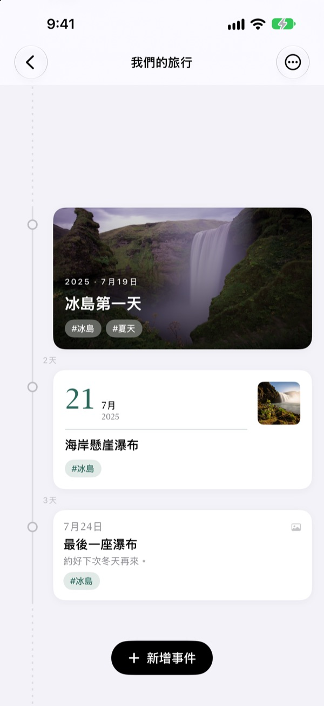
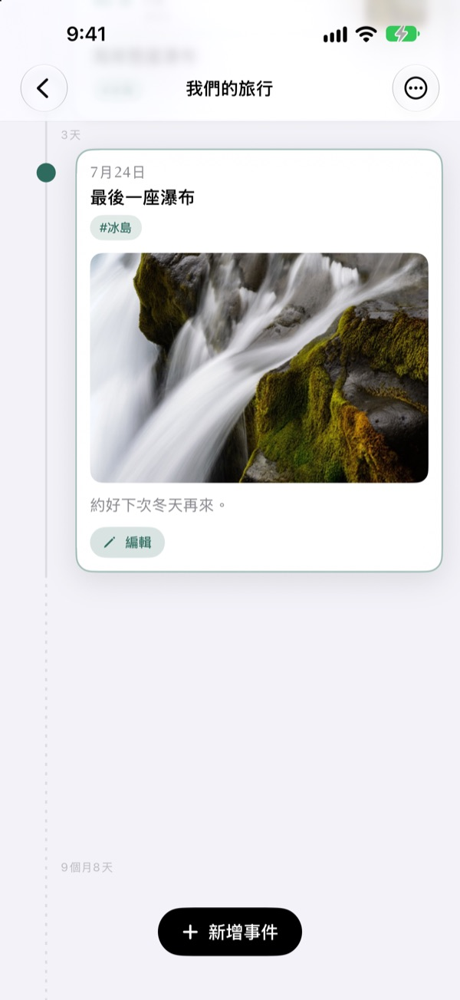
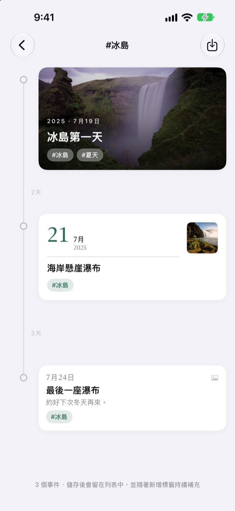
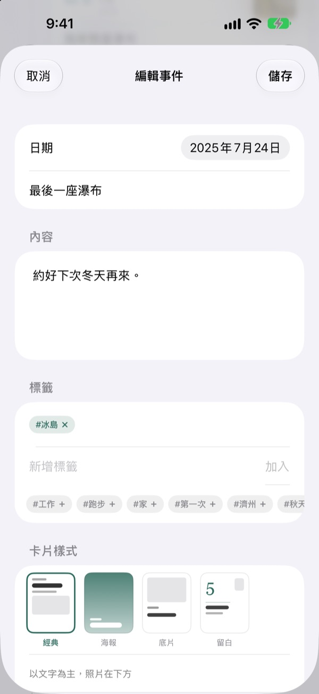

時間過了多久，
間隔就有多長
3天和5天依3比5拉開，像2年4個月這樣的長空白會摺成一段虛線。光看間隔，就看得出那段日子是怎麼過的。
所有功能免費，支援 iPhone 和 iPad。
親手拉開間隔看看
點一下按鈕，就會在最後一個事件後面新增事件。間隔的畫法和 App 完全一樣。
滑遍相簿，也看不出時間有多長
照片圖庫只會依日期排隊，隔3天和隔2年都只是相鄰的一格。Yeoul 依事件之間流逝的時間拉開距離，哪段日子密密麻麻、哪段空空蕩蕩，一眼就看得出來。
間隔，就是流逝的時間
整條時間軸用同一個比例，同樣長的時間在畫面上任何位置都是同樣的長度。每段間隔都標上真實時長，例如 3天、5個月21天。
靠得太近的事件會留出最小間距避免重疊，太長的空白則摺成虛線。

幫你找出當天拍的照片
定好事件日期後點 尋找相關照片，就會從圖庫找出那天拍的照片。沒有合適的，點 手動選取 自己挑。
在時間軸上點一下事件，照片和文字就在原地展開。

一個標籤，聚起散落的瞬間
替事件加上 #冰島 這樣的標籤，點一下，散落在各條時間軸的同標籤事件就會聚成一條新時間軸。
儲存後會留在列表裡，之後加上同一標籤的事件也會自動加入。

每個事件，配一張合適的卡片
以文字為主的經典、照片鋪滿的海報、像相紙一樣的底片、大大日期撐場的留白。選下去的那一刻，預覽就跟著變。

三個步驟就能開始
- 1
建立時間軸
孩子的第一年、戀愛、旅行，每個主題取好名字、選好顏色。
- 2
新增事件
寫下日期和標題，附上當天的照片。
- 3
加上標籤
同一標籤的事件會跨越時間軸聚在一起。
四種卡片設計
- 經典
- 以文字為主，照片放在下方。
- 海報
- 照片鋪滿整張卡片，大標題壓在上面。沒有照片時以時間軸的顏色填滿。
- 底片
- 像相紙一樣留邊的照片，搭配打字機字體和日期戳記。
- 留白
- 大大的日期數字站在中間，照片小小的，文字才是主角。
新事件會沿用這條時間軸最新一張卡片的設計。
所有功能都免費
免費
- 時間軸想建幾條都行，可選名字和顏色
- 每個事件都能加照片、文字和標籤
- 尋找當天拍的照片
- 儲存標籤時間軸
- 四種卡片設計
- 透過 iCloud 在 iPhone 和 iPad 之間同步
- 用捷徑和 Siri 記錄
支持開發者
- 小、中、大三種小費任選
- 不會解鎖任何功能，只是表達謝意的地方
在設定畫面裡，想給的時候再給。
沒有廣告，也沒有訂閱。
常見問題
為什麼事件之間的間隔都不一樣？
Yeoul 依真正流逝的時間拉開間隔。所有間隔用同一個比例，所以3天和5天看起來就是3比5。靠得太近的事件會留出最小間距避免重疊，太長的空白會摺成虛線，並標上像2年4個月這樣的真實時長。
看不到當天拍的照片。
依日期找照片需要照片取用權限。請到 設定 > Yeoul > 照片 允許取用。Yeoul 會依裝置時區尋找當天0點到24點之間拍的照片。如果不想授權，可以點下方的 手動選取，直接從圖庫挑選。
標籤時間軸是什麼？
點一下事件上的標籤，Yeoul 會從所有時間軸找出有這個標籤的事件，匯成一條時間軸。常看的標籤可以儲存在列表裡。事件並沒有被複製，只是聚在一起顯示，所以修改原本的事件會同步反映，刪除標籤時間軸也不會刪掉事件。
為什麼標籤時間軸不能新增事件？
標籤時間軸不是存放事件的地方，而是依標籤彙整的畫面，無法決定新事件該放進哪條時間軸。在原本的時間軸新增事件並加上標籤，它就會自動出現在這裡。
不打開 App 也能記錄嗎？
可以。在捷徑 App 或 Siri 使用 記錄事件，只要選好時間軸和標題。沒有設定日期的話，就以現在的時間記錄。
在其他裝置上也看得到嗎？
以同一個 Apple 帳號登入 iCloud 的 iPhone 和 iPad 會自動同步。請到 設定 > 你的名稱 > iCloud 確認 iCloud 已開啟。依網路狀況不同，同步可能會稍微延遲。
想刪除紀錄怎麼做？
在列表中把時間軸往左滑，或點編輯按鈕就能刪除。刪除時間軸時，裡面的事件也會一起刪除。留在 iCloud 的資料，可以在設定的 iCloud 儲存空間管理中刪除。
我的紀錄會傳給開發者嗎？
不會。紀錄和照片只存在你的裝置和你自己的 iCloud，開發者看不到。詳細內容請看下方的隱私權政策。
想回報問題或提出建議？
可以直接在 App 的設定畫面傳送，也可以寄信或透過 Instagram（@lee25_ios）聯絡。附上裝置型號、iOS 版本和當時的狀況，能幫我們更快處理。
有任何問題或建議，歡迎來信 leeo@kakao.com。